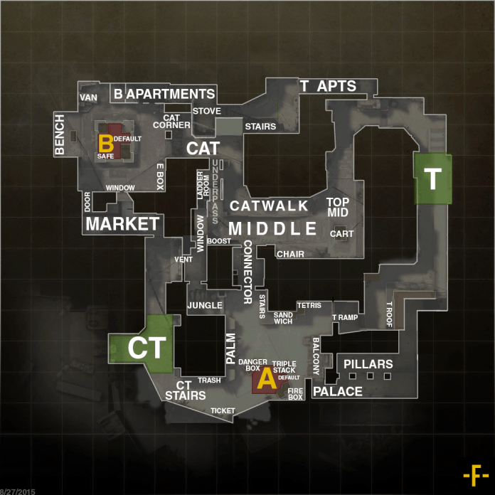

Dust 2 est sans aucun doute la carte la plus connue des jeux Counter Strike. Elle a étée imaginée en 2001 par un Britanique du nom de David Johnston (Créateur de Dust et Cobblestone), elle fût d'abord conçue car les joueurs réclamaient une deuxième version de Dust. Du fait de toutes ces demandes, le mappeur s'est mit (malgrè le peu d'ambition pour la nouvelle édition du légendaire terrain désertique) au travail.
Le mappeur Britannique souhaitait d'abord intituler la map "Dust3" car : "En fait, en partant du principe que le troisième film d'une trilogie n'est jamais aussi bon que le premier, j'ai décidé de l'appeler "Dust3", en espérant que personne ne le remarquerait. Mon hypothèse était que tout le monde continuerait de jouer sur Dust, première version."
En effet, l'hypothèse de David Johnston se révèlera fausse car Jess Cliffe (l'un des co-créateurs du jeu) insistera pour que Dust3 intègre le map pool officiel du jeu. Après cela, il décidera de renommer la carte en "Dust2" par logique.
Ce sera le 10 mars 2001 ,lors de la sortie de Counter Strike 1.1, que le résultat des effort du mappeur sera présenté publiquement. La suite ne sera qu'entre les mains de la communauté qui en feront une seconde maison.
Dust2 sera souvent citée comme étant la map la plus équilibrée du map pool la carte n'a pas cessée d'évoluer d'un point de vue graphique en presque 20 années :
"Je crois vraiment que Counter-Strike et Dust2 ont grandi en parallèle. La manière dont le jeu est joué a été influencée par le design des cartes les plus populaires, particulièrement Dust2. En tant que level designer, quand on commence un nouveau projet, on regarde ce qui fonctionne bien sur Dust2 et on essaie de s'en inspirer pour nos propres cartes." FMPONE (Mappeur et créateur de plusieurs des dernières versions de cartes sur CS:GO comme Cache par exemple)
Pour terminer, voici une image répértoriant les noms des différents endroits de la carte :
Sources : sources map ; les maps avec les callouts ont étées faites par un utilisateur du nom de Froosh.